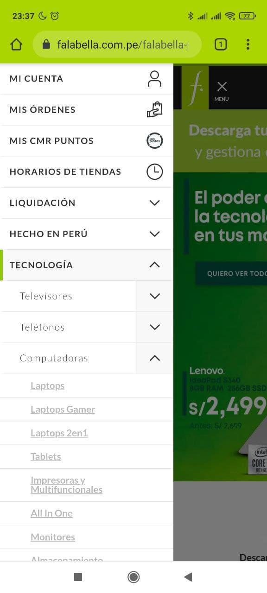
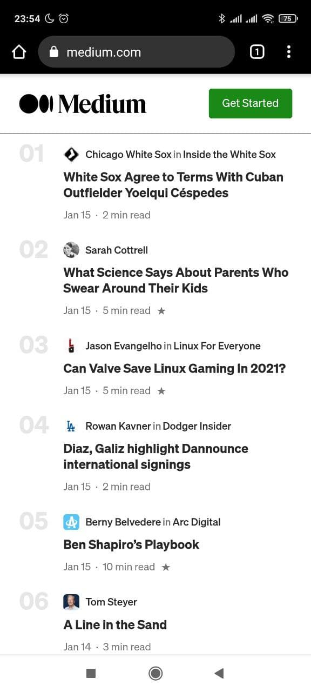

Visual Hierarchy
In this example, clearly, we can appreciate how to apply the Visual Hierarchy principle. The whole page has a grey scale colors, but only the start button has an appealing yellow/orange color. This produces the user feels tempted to click on it.
Hick's Law
This image was taken from a local retail site, in Peru. Falabella is a retail that sells a huge amount of items, from clothes until furniture. Browsing on its online store can be overwhelming, but they have applied the Hick's Law in their site--you can select one category and then another, and so on, until you can find the item you search for.
Proximity
In this last image, taken from Medium, a well-known platform to share content, we can appreciate a very highly neat design, with all of the most important principles: White space, Alignment, Repetition, Contrast, etc. However, I want to highlight to the Proximity principle. In each entry you can realize that there are a number, the author's name, the post title, the date, and the approaching time you would spend reading the post. It's a lot of information, but the space between each entry, and the order and proximity of all the elements inside each one, make each post looks clean and invites you to read out.